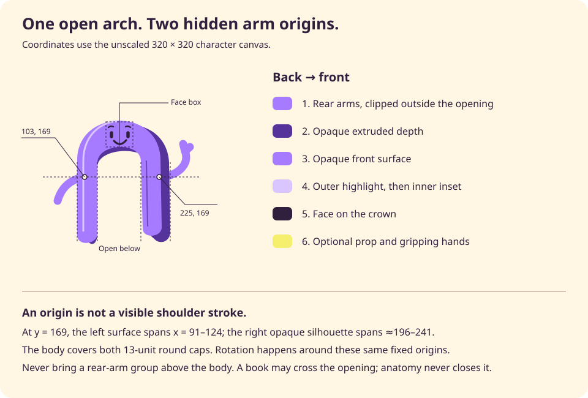

A little Bend.
A little company.
An open arch, a face on its crown, and room for the things that matter. Bend is warm company, not another thing to look after.
An open smile and relaxed brows. A greeting, not a request for attention.
Still until you choose a gesture.
This is a character preview. The books and card are illustrations; no tasks, AI or services run here.
A face for the moment
Expression and posture are independent. In daily work, prefer rest or a small reading pose. Save the wave for a welcome and the raised card for an occasional, meaningful completion.
Give the expression room
64 pixels preserves the silhouette. At 96 pixels, the face begins to read. Use at least 160 pixels when the difference between expressions matters; never make an expression the only status indicator.
Built around an opening
The crown carries the face. The arms emerge from behind the body, leaving the highlight and inner crease continuous. Books can pass in front; the arch itself never has a lower connector.
